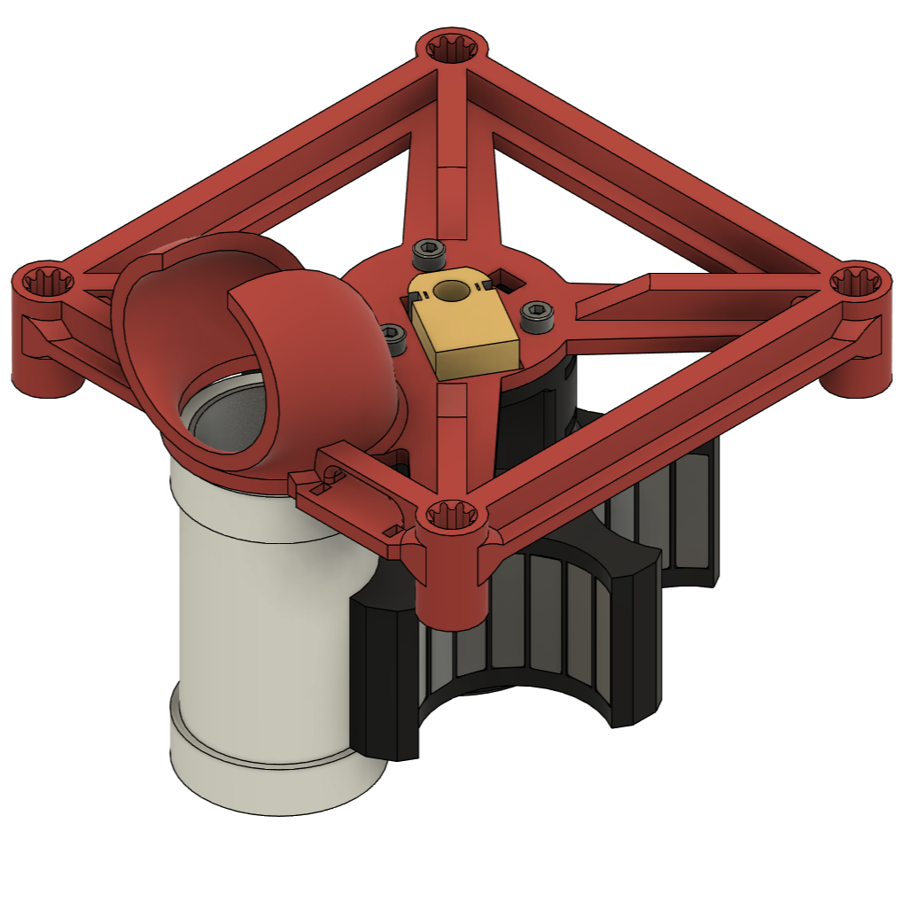
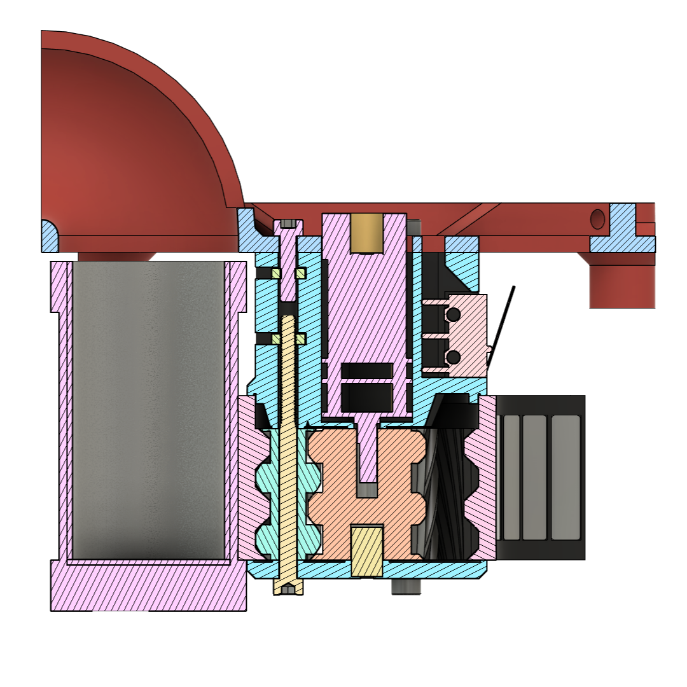
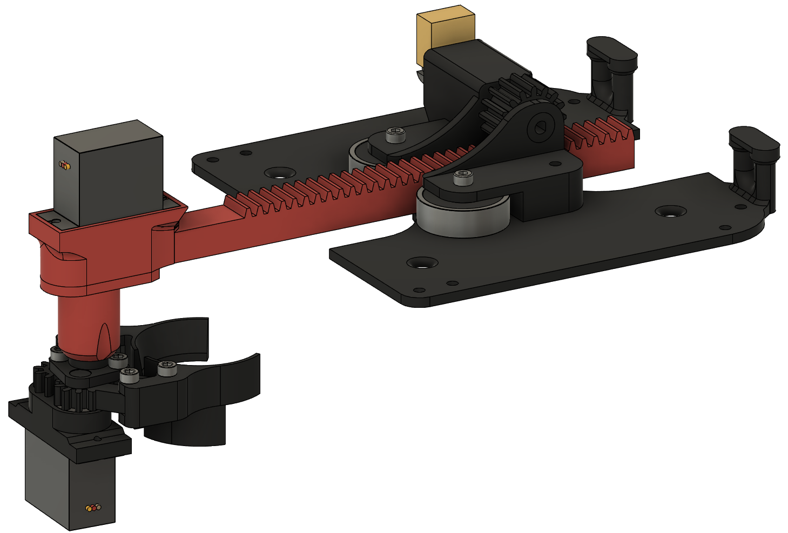
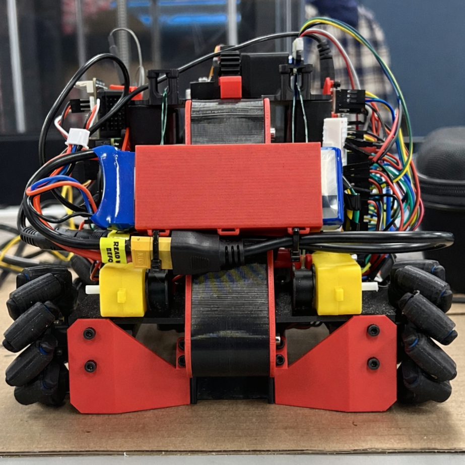
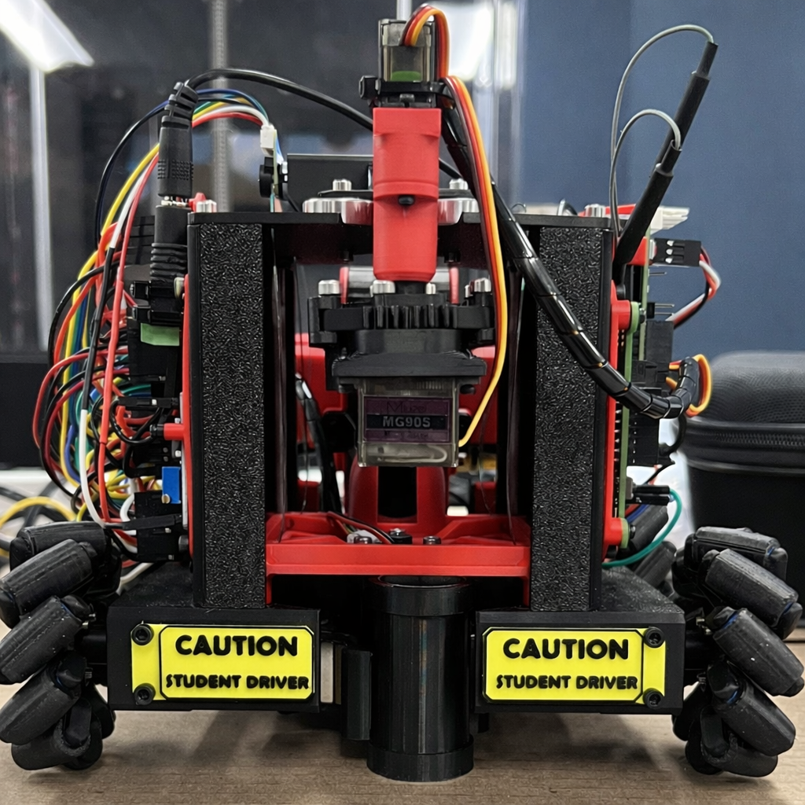

Fuel Harvester Transporter
Compact competition robot designed to collect canisters and fuel deposits, automate storage, and unload filled canisters at home base with minimal pilot input.
Why this project matters
This project brought together compact mechanical packaging, custom wheel design, embedded control, and subsystem automation in a single competitive robot. Comprised of technical work, including system design, integration, implementation, and refinement . The final transporter combined a six-slot magnetic revolver, vertical conveyor, custom narrow mecanum wheels, and an unloading arm into one space-constrained platform designed to reduce pilot workload and improve scoring speed.
Primary Contributions
- Led the overall system design, packaging, and subsystem integration of the transporter
- Drove the design and iteration of the major mechanical systems, including the revolver, unloading system, and wheel packaging
- Developed the encoder-based closed-loop control approach for the revolver and unloading arm
- Implemented and refined embedded communication and subsystem coordination logic
- Carried the majority of debugging, testing, redesign, and final competition-readiness work

Finished transporter

Revolver assembly CAD

Revolver close-up showing planetary gearbox reduction mechanism
What I Learned
This project reinforced that subsystem performance is not enough on its own. Packaging, tolerances, sequencing, controls, wiring, and operator interaction all decide whether the full machine works. It was also a strong lesson in when to simplify: reliable systems beat fragile clever ones, and good engineering often comes from making constrained hardware do more than it was originally meant to do.
System Layout
The transporter was developed around a vertical conveyor for fuel deposit collection, a six-slot magnetic revolver for canister storage, a lifting mechanism to raise the revolver, and a linear removal arm to unload filled canisters at home base. The design aimed to minimize the precision required from the operator by letting the mechanisms capture, guide, and index game pieces automatically.
Mobility came from a set of custom narrow mecanum wheels designed specifically to fit within the transporter’s dimensional constraints without compromising the surrounding subsystems. That custom wheel design preserved full planar motion while still fitting the tight packaging of the chassis.

Canister removal arm assembly
Key Mechanisms

Six-slot magnetic revolver for rapid canister pickup and indexing

Vertical conveyor for controlled one-at-a-time fuel deposit collection

Rack-and-pinion unloading arm with encoder-based extension control
Engineering Decisions
A rotary canister system was selected over robotic arm and linear alternatives because it offered better reliability, simpler control, and compact six-canister storage within the packaging limits. Magnets in the revolver bays allowed canisters to be collected simply by driving into position.
For fuel deposits, the conveyor approach beat other concepts because it was space-efficient, mechanically simpler, and easier to control reliably than a robotic arm or drum-style collector.
Controls and Embedded Work
The embedded control approach covered subsystem coordination, input handling, communication, and position-based actuation. Both the revolver and the unloading arm used PID-based closed-loop position control, allowing repeatable indexing, extension, and mechanism sequencing under tight packaging and hardware constraints.
One unusual control challenge was implementing closed-loop control for two separate motors using a single quadrature encoder interface resource. That forced careful sharing of encoder feedback and control infrastructure between the revolver and arm subsystems as dedicating separate hardware was not available for each axis.
The drive system also required nontrivial software. Joystick inputs were converted into planar mecanum motion using coordinate conversion and wheel-level power calculations, allowing translation and rotation control of the transporter. UART communication was also revised multiple times to reduce startup delay, improve message handling, and reliably pass user, motor, and servo commands between controllers.

Wiring and electronics
Iteration and Debugging
A large portion of the project effort went into iterative debugging and integration. Wheel-to-motor interference forced a chassis redesign. Revolver tolerances had to be corrected. Conveyor geometry was split into smaller parts to speed up prototyping. Wiring had to be reworked to prevent wheel snagging and improve reliability.
The colour sensor concept also looked good on paper but failed in practice. It could not reliably distinguish the two ball colours, so the strategy was changed to sequential filling with manual operator sorting. That was the right move because it was faster and more dependable.
The control system had to be refined alongside the mechanics. Sharing one QEI resource across two PID-controlled motors added complexity to sequencing, feedback handling, and testing, but it made the final design more capable without expanding the hardware footprint.

Revolver tolerance required a chassis redesign to allow it to spin freely